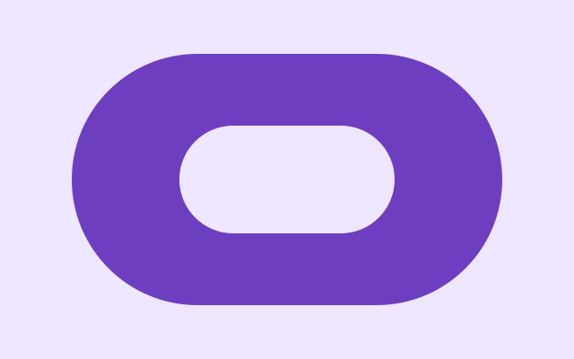
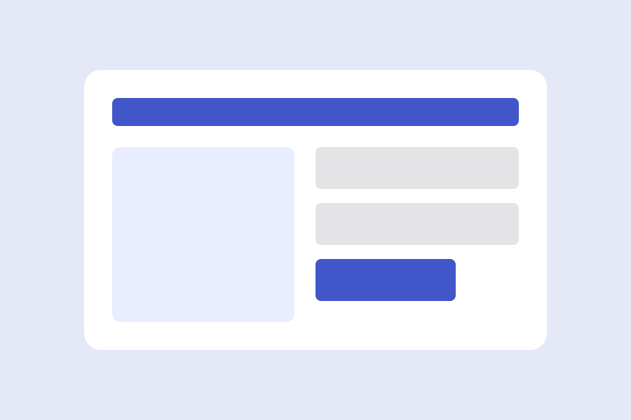
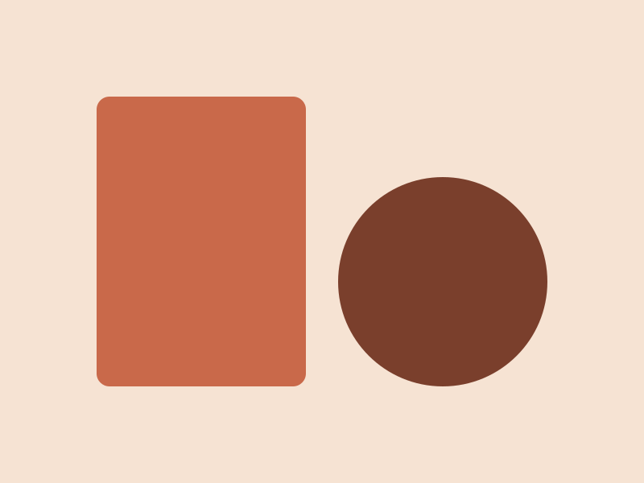
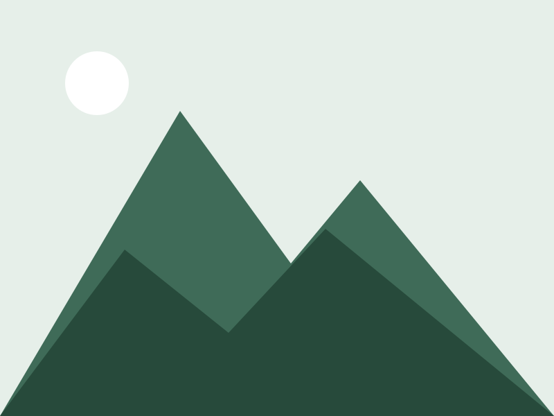
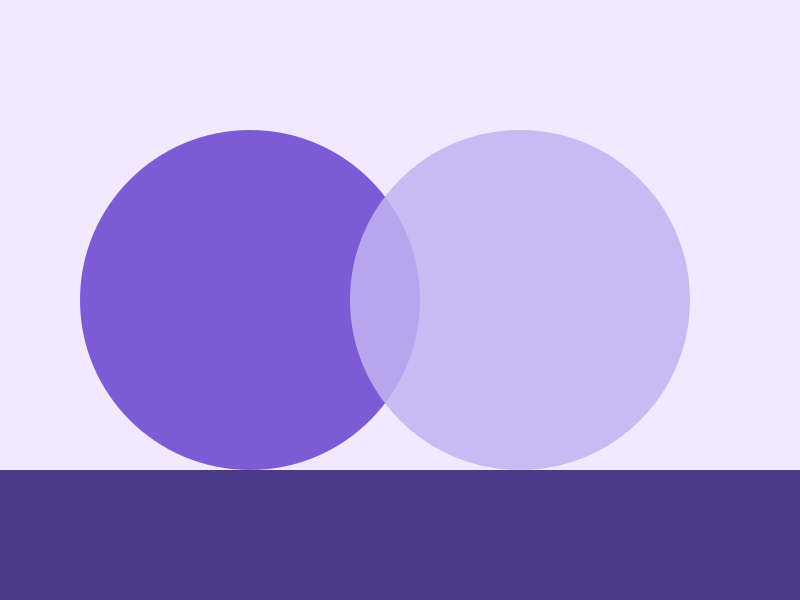
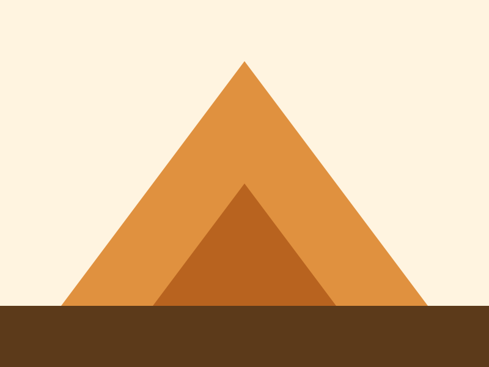
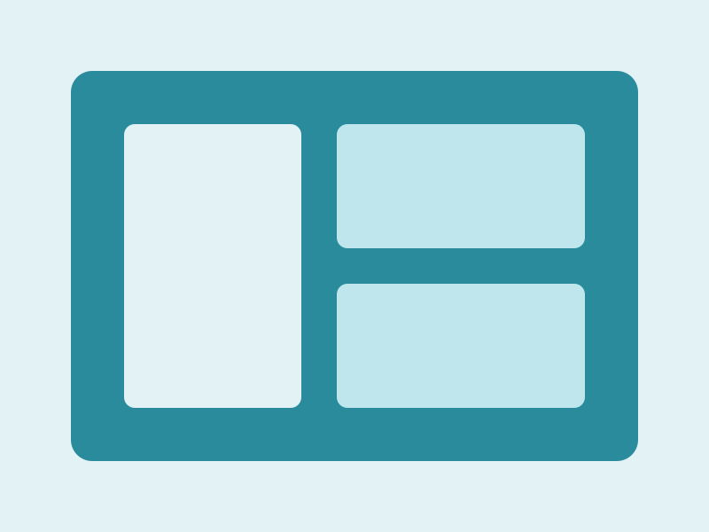
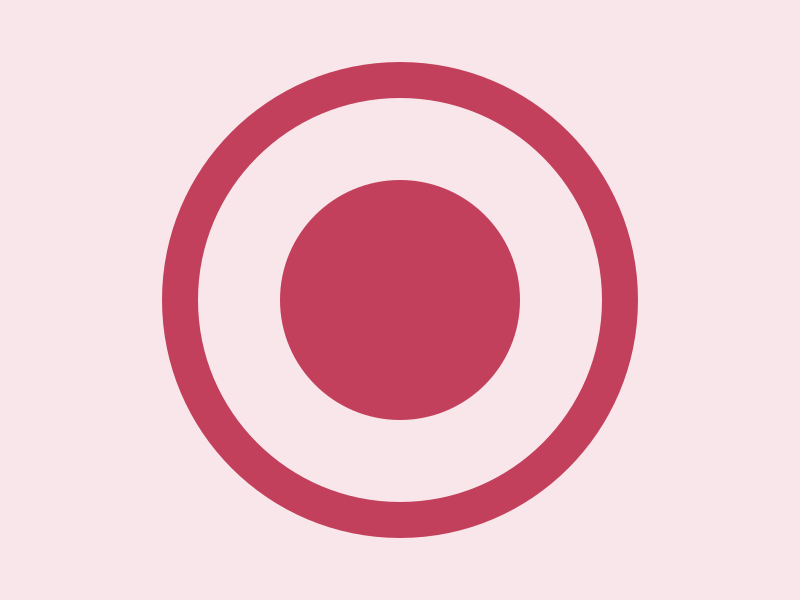

Drawing now
1.2 kW
Heat pump and the oven.
Nothing on this page is drawn with a line. What you can press stands out of the grey; what you can set sinks into it. The panel beside this is live: every control on it is the markup you get.
Neumorphism has exactly two: push a thing out of the surface, or press it in. Every raised shape uses one pair of shadows, every sunken shape the same pair turned inside out, and both come from two colours in theme.css. The form below is the ordinary .field pattern in a sunken well; the switch is a checkbox with role="switch".
A tile is a card that reads one number. It is the plain card with neumorphic-tile added; the body is the same .card-body every card has.
1.2 kW
Heat pump and the oven.
62 %
Enough for the evening.
9 °
Falling to 4° overnight.
The ordinary card is raised. Add neumorphic-pressed and it sinks, which is how the example marks a room that is off. The third is the template's feature card: it rises further under the pointer and presses in when you click it.
The default. A light shadow above and to the left, a dark one below and to the right.

The same shadows, inset. The picture dims a little so the card reads as idle.

Hover to raise, click to sink. The same two recipes every button uses, on a whole card.
Horizontal cards put the media beside the body, on the left or, with card-media-end, on the right. They stack on a phone.

The image takes a little over a third of the width; the text takes the rest.
The same card with one more class. The markup does not change.

Every colour is a light-dark() pair, so the two shadow colours swap with the scheme and the shapes keep their depth. The toggle in the corner cycles auto, light and dark and remembers your choice.
Buttons are raised and press flat. The round one holds a single glyph for stepping a value or switching something on. Badges are small raised pills. A banner carries a coloured edge, the one line in the template; the sunken variant drops the edge and colours the mark instead.
Accordions are native <details> elements. Give a group the same name and opening one closes the others, with no script.
There are none. Every edge is light falling on a shape. The one exception is the coloured edge on a banner, and the sunken banner drops even that.
Five, all in theme.css: raise, raise large, flat, inset and inset small. Each is built from --neumorphic-light and --neumorphic-dark. Change those two colours and the whole template follows.
No. Copy the folder, link the two stylesheets and the one script, and write HTML. Anything from 2024 on runs it: light-dark(), :has(), popovers and exclusive accordions.
A single accordion stands on its own.
css/, js/theme.js, assets/ and the README. Everything else in the folder is showcase and can go.
Tables sit on a raised tile that scrolls sideways when they are wider than the page.
| Shape | Recipe | Used by | Docs |
|---|---|---|---|
| Raised | --neumorphic-raise | buttons, cards, accordions, badges | cards |
| Raised, large | --neumorphic-raise-lg | the panel, the dial, the feature card | flare |
| Flat | --neumorphic-flat | navbar, banners, fieldsets, the switch thumb | switch |
| Inset | --neumorphic-inset | wells, pressed cards, a held button, the dial face | buttons |
| Inset, small | --neumorphic-inset-sm | inputs, the switch track, the segment, code blocks | forms |
Eight placeholder pictures from assets/. Click one: the lightbox is a <dialog>, the arrows and the thumbnails are plain links, and Esc closes it.







Dialogs are native. The button opens one; the dialog closes itself through a form, traps focus and dims the page, and all of that comes from the browser.
Prose is what most pages are made of, so .prose styles every construct a markdown renderer produces. Code blocks are sunken wells; quotes keep a quiet rule. The blog post runs the full test document through it and defaults shows every bare element.
Depth is a property of light, not of lines. Take the lines away and the light is still there.